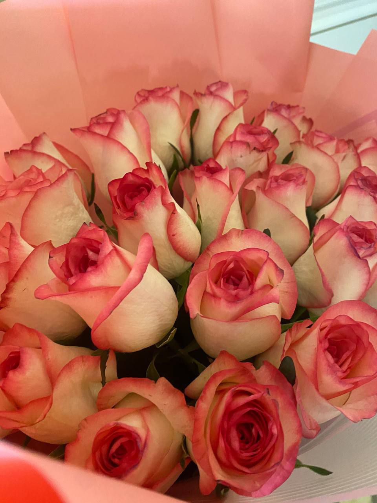

About me
My name is Nurbi Alchiken.
I live in Taraz, Kazakhstan.
Currently, I am a student learning programming and web development.
In the future, I would like to become a professional web designer and
developer.
I want to create useful and beautiful websites that help people and
inspire creativity.
Three Important Things About Me
- I love learning new technologies.
- I enjoy helping people solve problems.
- I am creative and like designing new things.
Favorite Quote
"Success is not final, failure is not fatal: it is the courage to continue that counts."
Winston Churchill
My Picture
Favorite Website
One of my favorite websites is YouTube, because I can learn new things, watch tutorials, and also relax with entertainment.
My Hobbies
One of my favorite hobbies is reading books. Reading allows me to explore new worlds, gain knowledge, and relax after a busy day.
I enjoy different genres like fiction, history, and science. Visiting libraries and reading in cozy corners makes me feel happy and inspired.
Hobby in Action